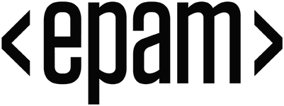
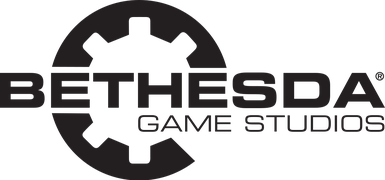

"Information technology and business are becoming inextricably interwoven. I don't think anybody can talk meaningfully about one without the talking about the other."
– Bill Gates
About Me
Here's a little bit about my background.
I am a goal-oriented geek with a passion for innovation, technology, and business transformation.
I am a business and technology leader with over 20 years of experience bridging technical depth and strategic execution. Throughout my career across Media & Entertainment, Technology, Retail, Automotive, Healthcare, Life Sciences, Telecom, and Financial Services, I have focused on digital strategy, product and program management, operations, and enterprise account growth.
From building consulting practices to scaling entrepreneurial ventures, I partner with organizations to turn complex transformation goals into measurable outcomes, and always with a focus on continuous learning, strong team culture, and meaningful industry relationships.
Build
Consulting practices and industry offerings, from Cognizant's Digital Media Consulting practice and OnPrem's Dallas hub to EPAM's AI-native M&E offerings.
Grow
Go-to-market from strategy and marketing through business development, partnerships, and account management, including an $80M+ North American M&E portfolio.
Lead
High-performing teams built on empowerment, innovation, and servant leadership, helping Qvest.US grow from 13 to 300+ employees.
Career Arc
Areas of Expertise
What I bring to a business
Growth
Go-to-Market Strategy, Business Development, Account Management & Growth, Strategic Partnerships, Consulting Practice Building, Thought Leadership
Leadership
Business Unit Leadership, Team Building, Coaching / Mentorship, Operations Management, Vendor & Partner Management, Stakeholder Management
Delivery
Digital Transformation Strategy, Solution Design, Program & Project Management, Risk and Issue Management, Change Management, Agile Process Transformation
Technology
Digital Media Supply Chain (DAM, CMS, BPM), Customer Experience / MarTech, Data & Analytics, Artificial Intelligence, Cloud Computing, Content Protection, Master Data Management
Companies I've worked with and for


"The number one benefit of information technology is that it empowers people to do what they want to do. It lets people be creative. It lets people be productive. It lets people learn things they didn't think they could learn before, and so in a sense it is all about potential." – Steve Ballmer
Work Experience
Select a role to see the details.
EPAM SystemsHead of M&E Consulting / Managing Principal
- Head of EPAM's Media & Entertainment Consulting practice for North America, focused on digital transformation for content providers, live entertainment, and sports
- Lead go-to-market from strategy, marketing, business development, and partnerships through account management and delivery management across an $80M+ North American M&E portfolio of Fortune 100 content providers, live entertainment, and sports clients
- Help clients compete in M&E through revenue optimization, cost optimization, data intelligence, personalization, and digital media supply chain engagements, combining digital strategy, experience design, consulting, and software engineering
- Developed AI-native industry offerings, capabilities, and accelerators across media supply chain, AI/ML-driven revenue and cost optimization, and data intelligence, earning EPAM recent recognition across several analyst firms as a Leader within M&E and AI
- Work closely with Sales, Marketing, Client Partners, and other delivery teams; author EPAM's M&E thought leadership on AI, personalization, revenue and cost optimization, and industry trends (see Publications)
AdaptAdvisory Board Member (part-time)
- Advise the CEO and executive team at a company integrating the latest AI technology with media experts and artists to create and distribute world-class translation solutions, providing guidance and industry insights
Qvest.US / OnPrem Solution PartnersVice President / Principal
- Leader and subject matter expert in the Digital Media Supply Chain, Customer Experience, and Strategy Consulting practices, spanning business strategy, digital asset and content management, process improvement and automation, enterprise services, digital distribution, content protection, media technology, and data & analytics
- Created, led, and grew OnPrem's Dallas consulting hub as head of the Central Region; helped grow the company from 13 to 300+ employees over 8 years and ultimately get acquired
- Led business development and marketing across M&E, Automotive, Telecom, Consumer Goods, and Retail clients, resulting in over $6M in revenue
- Developed and led strategic partnerships with Adobe, Aprimo, Bynder, and Sitecore
- Managed multiple clients and project teams across Fortune 200 companies (see selected engagements below)
- Managed, mentored, and developed team members through servant leadership
- Created thought leadership materials (white papers, articles, videos) and presented at industry conferences such as Henry Stewart
CognizantAssociate Director, IME Business Consulting (Senior Manager from Nov 2011)
- Built out Cognizant's Digital Media Consulting Practice within the Information, Media, and Entertainment (IME) business consulting group, with a focus on business strategy, media asset management, process automation, media distribution, content protection, and mobility
- Created white papers and marketing materials, presented webinars, attended industry conferences, and assisted in business development
- Managed and developed on-site and offshore team members across the practice and its projects
- Managed multiple clients and project teams, including:
- Search and workflow automation projects for a film & entertainment studio
- Media distribution, content protection, and enterprise service projects for a film & entertainment studio
- A mobility and 2nd-screen iOS app for a broadcaster
- A media asset management implementation for a TV broadcaster
BuyerlyCo-founder & CTO
- Co-founded an online platform connecting consumer brands and products with a private network of major retail buyers for product, pricing, and packaging feedback and market research; retail buyers can browse products, communicate with brands, and initiate purchase orders
- Developed the business plan, marketing plan, and functional / technical specifications for the products
- Created the strategic technology roadmap and architecture, and managed the offshore and onshore teams for front-end / back-end development, testing, and production releases
ReadyUpCo-founder
- Started a consumer impromptu social activity company focused on a need identified through customer discovery
NBCUniversal / General ElectricManager · Operations Manager · Product & Program Manager
- Manager, Content Quality and Operations (Nov 2009 – Nov 2011)
- Managed NBCU's Digital Vault operations team and partnered with post house vendors to digitally deliver master content
- Designed and managed development of business process automation workflows to streamline asset management for the Digital Vault
- Led long-range financial planning and project creation for Digital Vault operations to enable B2B and B2C opportunities for the asset catalogue
- Digital Distribution Operations Manager (Aug 2009 – Nov 2009)
- Created and maintained development schedules, budgets, and resource allocation across vendors, contractors, and the internal technical team
- Identified additional internal and external opportunities for the digital media delivery solution and developed the build, installation, and support plan for the business
- Information Management Leadership Program (Jul 2007 – Aug 2009)
- A two-year program of four six-month rotations through different areas of NBCUniversal, with on-the-job leadership training and formal coursework in advanced information technology and systems
- Product Manager, Media Technology Business Development: worked with senior management to develop the vision, strategy, business case, competitive analysis, revenue model, legal business agreement, and marketing plan for a new digital media delivery business
- Product Manager, Interactive Media Product Development: led research on 10-Foot Experience technologies and online video opportunities; defined requirements for Silverlight DRM integration and dynamic ad insertion
- Program Manager, Project Management Office: led a LEAN initiative across NBCU's IT organization and an application portfolio rationalization that identified cost-out opportunities
- Project Manager, Enterprise DAM: developed requirements and process flows for news production and managed a $550K enterprise digital asset management lab budget and implementation across multiple vendors
Engineering, IT & FinanceEarlier Career
- Embedded Systems Engineer, Motorola, Inc. (2005–2006) and Keithley Instruments (co-op, 2005)
- Network Administrator, Cole National Corporation (2002–2004), supporting a network of over 1,000 computers
- Financial Advisor Associate, Merrill Lynch (2000–2001); Co-founder, Vive Tec Web Designing (2001)
Selected Fortune 200 Engagements
- Jira standardization for a media conglomerate's global direct-to-consumer (DTC) streaming platform
- Global centralized PMO standup for a media conglomerate's DTC streaming platform
- International and domestic dealer digital storefront strategy & implementation for an automotive company
- Enterprise DAM CI/CD pipeline and core re-architecture for an automotive company
- Video interpretation and workforce management platform strategy & solution evaluation for a telecom company
- Next-gen production in the cloud business case for a film & entertainment studio
- Ads & promos VOD trafficking strategy for a TV broadcaster
- Media asset management strategy & solution selection for a TV broadcaster
Show all 20 engagements
- D2C and identity management platform development for a media conglomerate
- Ad Solutions PMO definition & implementation for a media conglomerate
- Order management strategy, design, & implementation for a film & entertainment studio
- Enterprise DAM business case, solution selection, & implementation for a film & entertainment studio
- Enterprise DAM product management and CI/CD pipeline for a film & entertainment studio
- Gaming platform feature set strategy for a game publisher
- Broadcast competitive data dashboard blueprint for a cable network
- Content protection & consumer platforms organizational strategy and roadmap for a TV broadcaster
- Music royalties affiliate management, distribution management, data acquisition, CRM, and title/cue lifecycle assessment for a music rights company
- Video distribution post-M&A integration strategy for a media conglomerate
- Data & analytics program management for a major media company
- Lifestyle brand program management for a major media company
Publications
Thought leadership on AI, personalization, media supply chains, and digital media management.
- “The Superfan Economy: Moving from Broad Scale to Personalized Engagement”
- “The Race to Hyper-Personalization”
- “This Time, It's Personalized: 2026 Trends in Content, Live Events & Sports”
- “Innovative Ways AI is Used in Sports Today”
- “What Manufacturers Can Learn from M&E's Use of AI”
- “2025 Media & Entertainment Forecast: What's Next for Content Providers, Live Entertainment & Sports”
- “Stream Smarter: How AI is Reshaping Media & Entertainment”
- “AI Accelerating the M&E Content Supply Chain”
Show all 19 publications
- “Realizing Long-Term Success from Your Cost Optimization Program in Media & Entertainment”
- “Building the Foundations for a Successful Cost Optimization Program in Media & Entertainment”
- “Harnessing the Power of Revenue Optimization for Sustainable Growth in Media & Entertainment”
- “Trends to Watch for Media & Entertainment Brands in 2023”
- “Master Class: Building a Modern Digital Media Supply Chain”
- “The Future of CPG: Consumer Insights in a Dynamic Marketplace”
- “How to Benefit from the Digital Media Supply Chain in a Marketing World”
- “Asset Management Consolidation Projects Are Soooo 2014”
- “Changing Decision Making With Micro Services and Big Data”
- “DAMification: The Implications for Users and Vendors”
- “A Blueprint for DAM, MAM Cost Avoidance”
Contact Me
Interested in media, entertainment, and technology growth? Let's talk.